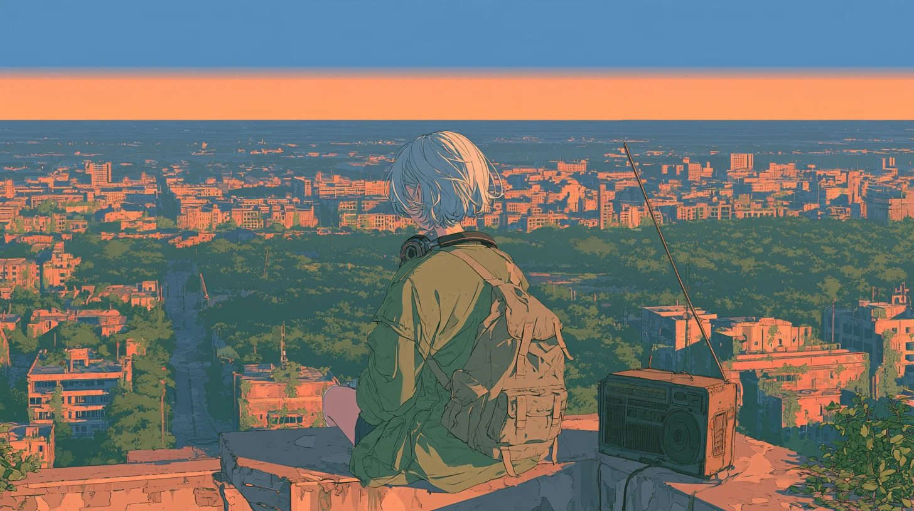

DAY --- ／ SIGNAL ▂▃▅▆▇
こちら、LAST LIFE LOG。
終わった世界の、
屋上から。
radio from the end of the world
文明が終わったあとの世界に、ひとりの少女が生きている。
彼女は毎日、見たもの・したこと・感じたことを短い記録（ライフログ）に残し、
それを音楽にして、まだ誰かが聴いているかもしれない電波に流している。
このチャンネルの動画は、その放送の1日分。
さみしいけれど絶望ではなく、静かで、少しだけ前向きな、作業・勉強・リラックスのためのBGMです。
A girl lives on after the end of civilization. Every day she turns what she saw, did and felt into a short log, makes it into music, and sends it out to anyone who might still be listening. Each video is one day of her broadcast.
この世界について放送記録 — これまでのログ
Logs
放送を聴く — YouTube